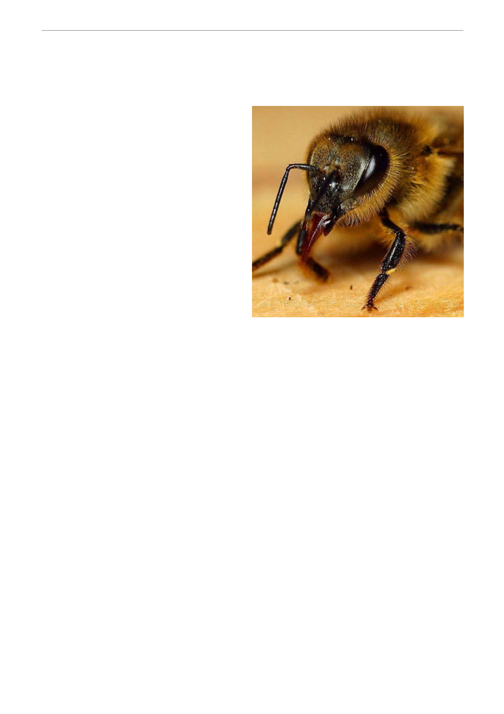

The head is the centre of sensory perception
with the large compound eyes, ocelli, antennae
and tongue all providing sensory input. There
are also sensory hairs on many other parts of
the bee’s body. One of the ocelli is clearly
visible on top of the head. [Photo by John
Sullivan]
This month's bit of bee biology . .
Sensing the world
(Article 27 by Bruce Ward)
Our honey bees have good senses of sight,
smell, touch and taste that allow them survive
and function within their environment. They
detect and use vibration as a means of
communication, but whether this adds up to a
sense of hearing is debatable. They have
several senses that we don’t, including an
ability to detect the earth’s magnetic field and
detect and use polarised light.
Their visual senses consist of five eyes. The two
large compound eyes are easily seen on the
head. Each eye consist of thousands of small
lenses that would give the bee a much more
pixelated view of the world than the one we
see. Our vision is 60 times sharper than that of
a bee, but the bee’s vision is much faster to
detect change. In a video comparison, our
camera has more megapixels, but the bee has a
better frame-rate!
The compound eyes give the bee a huge field
of view, with only one blind spot, directly behind
the bee.
Bees also have three simple eyes called ocelli
that detect light intensity and help with
orientation. These can sometimes be seen with a hand lens, on top of the head, between the
compound eyes, but they are often hidden among dense hairs. The ocelli are used to monitor the
horizon when the bee is flying.
Bees can sense colour very differently to humans. Our eyes present us with an image made up of
three primary colours; red, green and blue. Bees also see in three colours, but their primary colours
are green, blue and ultraviolet! Their ultraviolet vision helps them find flowers and nectar, but they
cannot see red. They also sense and use polarized light for navigation, especially when the sun is
not visible.
The antennae are extremely important sensory organs and they are easily seen on the head. The
bee can move the antennae independently. They can also move and rotate the joint in the middle of
each antenna. The antennae are packed with sensory receptors that contribute to the to the sense
of smell, taste and touch. The antennae also sense vibration and air movement.
The sensory receptors on the antenna are used in conjunction with other receptors on the legs. The
bee constantly cleans the antennae my running it through a special notch on the front leg, and the
notch is packed with chemical receptors for taste and smell.